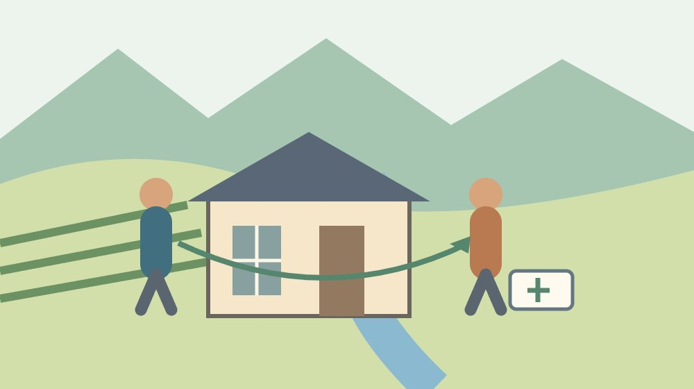
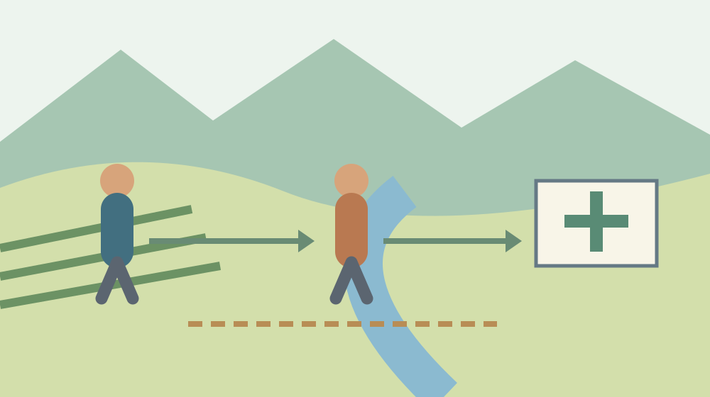

居住サポート住宅とは｜森町の空き家を貸す前に

Q. 森町の空き家を貸したいけれど、見守りまで大家一人で担うの？
A. 居住サポート住宅は、大家と居住支援法人等が連携し、日常の安否確認、訪問等の見守り、状況が不安定化した際の福祉サービスへのつなぎを行う認定制度です。森町で対応する支援者や料金はこの記事では未確認です。貸すと決める前に、支援を頼める相手と担当範囲を確認してください。
森町の空き家を貸す話は、守る人の負担から始める
森町の空き家を持つ方は、住んでいなくても草を刈り、屋根を気に掛け、近所からの連絡に応じています。遠くに住む子が管理するなら、帰省の費用と時間も要ります。貸せれば負担が消えると簡単には言えません。入居後の連絡と修繕まで考えたうえで、家を使う可能性を探す記事です。
私は大石浩之（磐田市／不動産業）です。空き家の相談を考えるとき、建物が使えるかと、持ち主が続けられるかを別の問いにします。入居する人に支援が必要なら、大家の善意を増やすだけでは回せません。支援者を確認することを、家賃や修繕費の話と同じ机に載せたいと考えます。
国土交通省の2025年9月30日付発表を、2026年10月6日に確認しました。居住サポート住宅の認定制度は2025年10月1日開始です。2026年10月に新しく始まった制度ではありません。開始から1年の時点で、森町の空き家を貸す判断にどう使うかを整理します。
この記事では、森町内の認定住宅数、個別物件の認定可否、対応する支援者、支援料金を確認できていません。制度の全国的な説明を、町内で今すぐ利用できるという約束には変えません。家を貸すと決める前に、誰が支援を引き受けられるかを問い合わせる一歩を提案します。
事実整理｜正式名称と三つの支援内容
国土交通省が紹介する居住サポート住宅の正式名称は、居住安定援助賃貸住宅です。改正住宅セーフティネット法に基づく認定制度として説明されています。対象には、低額所得者、高齢者、障害者、子育て世帯など、住まいの確保に配慮を要する方が挙げられています。空き家の売却方式を示す名称ではありません。
国土交通省の発表では、大家と居住支援法人等が連携して支援を提供します。支援内容は、日常の安否確認、訪問等による見守り、生活・心身の状況が不安定化したときの福祉サービスへのつなぎです。「大家が全部を世話する住宅」と読み替えると、制度が示す役割の分担が見えなくなります。
国土交通省は、2025年9月30日に居住サポート住宅情報提供システムを公開しました。認定された住宅の検索・閲覧と、認定申請等の手続に使える仕組みです。ただし、情報提供のシステムがあることと、森町の特定の家で支援を組めることは別です。地域と物件に合う相手の確認が残ります。
日常の安否確認、訪問、福祉へのつなぎは、同じ動作ではありません。私は、相談時にも三つを別行で聞くことを勧めます。誰が、どういう方法で確認し、どのような状況で訪問し、必要な連絡をどこへ渡すのか。名称だけを確認するより、暮らしの中の動きとして質問すると、引き受ける範囲を確かめやすくなります。
森町の空き家バンクとは役割が違う
森町の空き家・空き地バンクは、所有者等から情報提供を受けた物件を登録し、利用希望者へ情報を提供する仕組みです。町の公式案内は、町が交渉や契約を行わないことを明記しています。紹介の入口と契約後の支援を同じものとして扱わず、所有者が何を別途相談するかを整理します。
森町の物件公開ページは、賃貸物件と売却物件を区分して掲載しています。両方に登録された物件もあり、情報は随時更新されると案内されています。掲載されている空き家が、居住サポート住宅として認定されているとは確認していません。掲載の有無から、支援体制を推定することはできません。
私は、バンクの登録と支援住宅の認定を、家族のメモでも別欄にしたいと考えます。家を紹介する入口、賃貸契約の相談先、建物の管理先、入居者の支援先です。名称が似ていなくても、全部役場に任せられると思うと準備が抜けます。既に管理している方の時間を、説明の不足でさらに使わせたくありません。
森町の公式ページを読むときは、物件情報の掲載と取引の条件を分けて確かめます。私は、支援者を探す相談を始める際にも、家の所在地と状態を伝えられる資料を一枚用意する案を出します。修繕の要否や利用できる設備は、支援制度の名前では判断できません。建物の現状と希望する使い方を先にそろえます。
暮らしへの影響｜訪問できる範囲と連絡の担い手
森町で空き家を貸す検討では、支援者が家まで動ける範囲を確認する必要があります。町内なら同じ条件で訪問できる、とこの記事は仮定しません。道路、駐車場所、訪問にかかる時間など、物件ごとの状況があります。全国制度の説明を読むことに加え、所在地を示して対応可能かを尋ねます。
持ち主が町外に住む場合、鍵を開ける人と電話を受ける人が別になりがちです。私は、普通の連絡と急な連絡を、最初から分けた表にすることを提案します。これは制度の必須書式ではありません。誰かが出なかった場合の連絡先を用意するための実務上の案で、相手の対応可能な時間と合わせて話します。
修繕の連絡は建物の問題で、安否確認は暮らしの支援です。水漏れや設備故障が起きたとき、見守り担当が修理まで引き受けるとは限りません。私は、物件管理と居住支援を兼ねるかどうかも、名前だけで判断しないよう勧めます。依頼先の説明を聞き、契約で引き受ける仕事を読み分けます。
近隣の方が気に掛けてくれることと、支援の責任を引き受けることも別です。私は、近所の善意を正式な体制の穴埋めに使いたくありません。今日できる準備は、緊急連絡先として誰の名前を書けるのかを本人に確かめることです。近隣へ個人の生活情報をどこまで伝えるかも、入居者の意向を含めて慎重に話します。
良い点｜建物の貸し方に支援の相手を加えられる
居住サポート住宅は、入居中の支援を住宅の検討材料として明示しています。国土交通省の説明が、日常の確認から福祉へのつなぎまでを挙げている点は、支援を探す家族にも大家にも役立ちます。募集ができるかだけで話を終わらせず、暮らしが始まった後の担当を相談する入口になります。
私は、大家と支援者が連携する形を評価します。持ち主が「全部はできない」と言える余地ができるからです。空き家を使いたい気持ちがあっても、訪問や連絡を毎回一人で担えるとは限りません。できない仕事を先に出すことは、入居希望者を排除する判断ではなく、続けられる条件を確かめる作業です。
情報提供システムがあることは、制度名を聞いた後に調べる道を用意しています。私は、家族が同じ資料を読める点にも利点を感じます。遠くに住む親族と持ち主が、別々の説明を聞くと前提がずれます。支援内容の三項目を共有し、未確認の欄をそろえるだけでも、次の相談の時間を使いやすくなります。
家を貸すことを即決しなくても、支援者の有無を調べる作業には意味があります。私は、修繕費をかける前に、その家で暮らしの支援を組めるか尋ねたいと考えます。条件が合わなければ、別の貸し方や保有の仕方を検討できます。支援の相談を始めたことを、賃貸募集の約束として扱わない点も、家族の選択を残します。
注文したい点｜認定と日々の運用をつなぐ情報
森町で居住サポート住宅を検討する際、全国の制度説明だけでは埋まらない情報があります。対応する支援者、支援の費用、訪問の範囲、休日の連絡などです。この記事では未確認として残します。認定されるかという質問と、契約後にどのように動いてもらえるかという質問を、別に出してください。
私は、大家向けの説明で費用の負担者を明らかにしてほしいと考えます。建物修繕、通常の管理、居住支援の料金を一つの見積りにすると、誰の支出かが見えません。今日できる一歩は、支援の相談先に「所有者が払うものと入居者が払うものを分けて聞きたい」と伝えることです。金額は返答を受けて記録します。
制度があるから、すべての空き家で同じ支援を組めるわけではありません。私は、森町の家でどこまでの対応が現実的なのか、まだ判断できません。未確認の支援者や料金を例として作らないためです。家の所在地を伝え、訪問の可能性と必要な準備を確かめれば、その迷いは物件ごとの材料に変えられます。
支援が途切れたときの相談も先に必要です。私は、担当者の交代、契約の終了、家族側の連絡先変更が起きた場合の引継ぎを聞く案を出します。これは制度上の一律条件として書いているのではありません。長く貸す予定の家で、連絡先の名刺一枚に依存しないための提案です。回答のない項目は未確認として残します。

対案・結論｜貸す前に支援を頼める相手を確認する
森町の空き家を居住サポート住宅として検討するご家族が今日できることは、支援を頼める相手の確認です。まず所在地、建物の現状、希望する使い方を一枚にします。次に、居住支援を担う相手を紹介してもらえるか、対応地域に森町が含まれるかを相談します。具体的な依頼先が見つかった後に、料金と担当を尋ねます。
バンクへの登録を考える所有者は、空き家バンクの所有者向け整理も参照できます。情報を載せることと、入居後の支援を受けることを分けるための確認です。私は、物件の募集条件を決める担当と支援の相談担当が別なら、両者が使う建物資料をそろえる案を勧めます。
家を将来譲る方式が気になる方には、譲渡付き賃貸の仕組みを扱った記事があります。居住サポート住宅は、入居中の支援が今回の主題です。所有権の移転を約束する方式とは、相談の焦点が違います。用語が増えて混乱したら、家を貸す目的を一行に戻して書いてみてください。
家財が残っていて建物の点検を進められない場合は、実家の片付け前の整理が入口になります。私は、支援体制の目処がないうちに、募集のための改修をすべて決めない案を出します。家の現状が分かる写真を残すところから始めれば、使い方をまだ決めていないご家族も相談へ進めます。
家族に残す記録｜担当と未確認を同じ紙に置く
居住支援を相談するための記録は、所在地、所有者、連絡できる家族、建物の現状から始めます。私の提案する欄は、安否確認、訪問等の見守り、福祉へのつなぎの三つです。各欄に対応先、方法、費用の負担者、まだ分からないことを書きます。制度の正式な申請書を代替する紙ではなく、相談の前提をそろえる紙です。
電話の回答は、相談日と担当窓口を添えて残します。「支援できます」という返事を聞いた場合にも、家の所在地と支援範囲を共有したうえでの回答か確かめます。一般的な制度紹介と、物件に関する回答を同じ欄へ入れないようにします。認定の見通しを聞いた場合も、正式に確定した情報と検討段階の説明を分けます。
所有者と家族が決めること、支援者に尋ねること、建物管理先へ聞くことは別です。私は、依頼する側の希望を先に断定しすぎないほうがよいと考えます。例えば連絡できる時間を希望として書き、相手の対応可能な時間を返答欄に記します。両者が合わなければ、誰が間を受けるかを次の検討として残せます。
鍵や個人の生活情報の共有方法は、支援の相手が決まってから具体的に確認します。私は、見守りという言葉を理由に、誰でも入れる状態を作ることを勧めません。訪問の役割、入居者の意向、建物管理の契約を合わせて確認します。ご家族の記録にも、共有してよい情報と保管する情報を分ける欄を設けると整理できます。
大石の視点｜家を使う可能性と、続けられる条件
森町の空き家の活用を考える私は、持ち主が続けられる条件を先に見たいと考えます。建物に余地があっても、維持費と連絡の仕事を一人に積み上げれば続きません。制度は、その負担を具体的な担当へ分けられるかで評価したい。そのために、今日の問い合わせは認定の名称より支援者の存在を尋ねる形にします。
私はこう考えます。机に家の写真を置くなら、その隣には支援を引き受ける相手の欄を置きます。家賃の希望額や修繕の見積りだけを並べても、暮らしを支える人の空欄は埋まりません。安否確認を誰に頼めるのかが分かれば、貸す判断に一つ材料が増えます。これは私の意見として描いた準備の場面で、実際にあった相談の話ではありません。
私は、森町に暮らしの場として使える家の可能性を感じています。同時に、持ち主と近所の人の努力だけで支える形のままでは、管理の担い手が続かないと考えます。私の商売の範囲でできるのは、建物の状態と依頼する仕事を整理することです。支援体制の答えが出る前に、活用の成功を約束するつもりはありません。
貸すかどうかは、今日決めなくて構いません。私は、支援先を一つ確認できた日を前進と考えます。頼める範囲と料金が分かれば、募集へ進むか、修繕の計画を変えるか、保有しながら検討を続けるかを家族で選べます。居住サポート住宅を知る目的は、持ち主の仕事を増やすことではなく、判断の材料を具体的に増やすことです。
よくある質問
居住サポート住宅は大家が介護をする住宅ですか？
国土交通省の説明は、大家と居住支援法人等が連携して安否確認、訪問等による見守り、福祉サービスへのつなぎを行う住宅です。大家が介護を全部担う制度とは扱いません。建物管理と暮らしの支援の担当範囲は別に確認してください。具体的な方法、連絡可能な時間、費用は、依頼を検討する支援者に問い合わせます。
森町の空き家バンクに載せれば認定されますか？
森町の空き家バンクは物件情報を登録・提供する仕組みです。居住サポート住宅の認定とは別に確認します。掲載物件が認定住宅だとこの記事では確認していません。町は交渉や契約を行わないと案内しています。募集の相談、認定の手続、入居後の支援先を別々に確認し、同じものとして準備を進めないでください。
支援先や料金が分からなくても貸す話を進めてよいですか？
建物資料を集めて相談することはできます。ただし、支援を前提に募集や改修を決める前に、対応する相手、担当範囲、料金と負担者を確認してください。森町内の支援者、認定住宅数、個別物件の認定可否はこの記事では未確認です。所在地を示して問い合わせ、回答のない項目は未確認として家族の記録に残します。
参考にした公式情報
- 国土交通省：居住サポート住宅情報提供システムの公開（2025年9月30日）（2026年10月確認／確認日：2026年10月6日）
- 森町：空き家・空き地バンク（2026年10月確認／確認日：2026年10月6日）
- 森町：空き家・空き地バンク物件公開ページ（2026年10月確認／確認日：2026年10月6日）
最終確認日：2026-10-06。制度・数値・料金は変わる場合があります。税務・登記・契約・裁判手続の個別判断は、管轄窓口、司法書士、税理士、弁護士等へ確認してください。この記事は公表情報と大石の意見を段落単位で分けています。